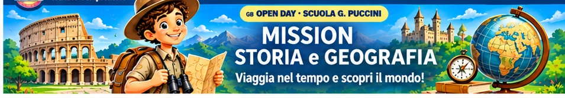

Open Day · 12 dicembre 2026
Storia e Geografia
La macchina del tempo — Tocca le risposte sulla LIM o sul tablet. Non servono dati personali.
Pronto a esplorare?
Tre sfide brevi, spiegazioni dopo ogni risposta e un timbro finale sul tuo passaporto.
Progetto didattico per l’Open Day della Scuola Media G. Puccini · Prof. Marco Cigolotti · Realizzato con il supporto dell’IA. Nessun dato personale viene richiesto o salvato.